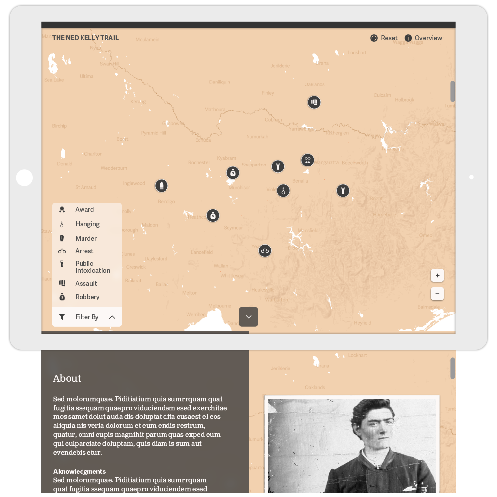
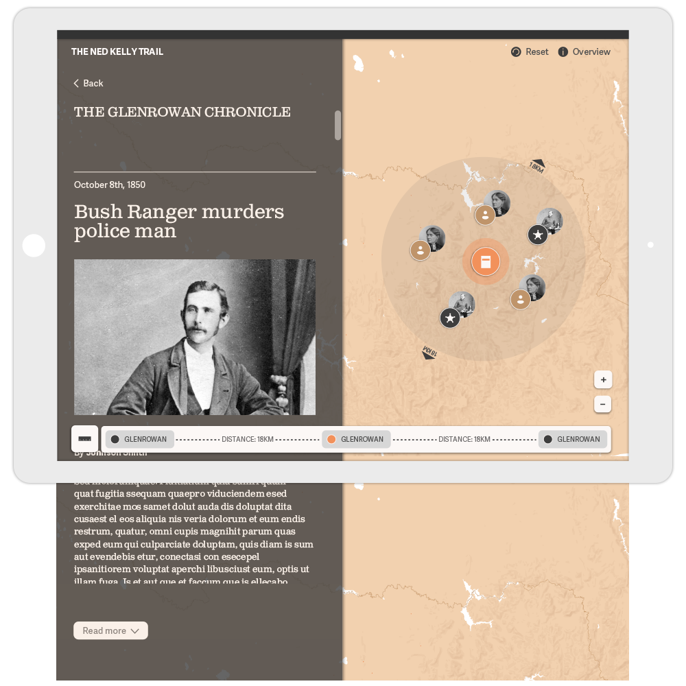

The Ned Kelly Trail
The brief: In cooperation with the National Trust of Victoria the Ned Kelly Trail is a proof of concept for an interactive timeline and map. It details the life of Ned Kelly through mapping various events that occured throughout his life. Designed in collaboration with Michael Pham and Jason Spivakovsky
Typeface: Adelle Sans & Clarendon

